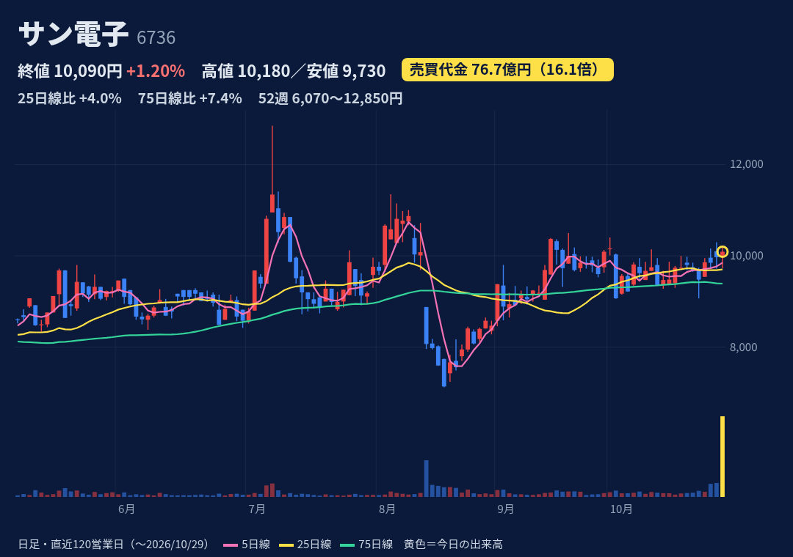
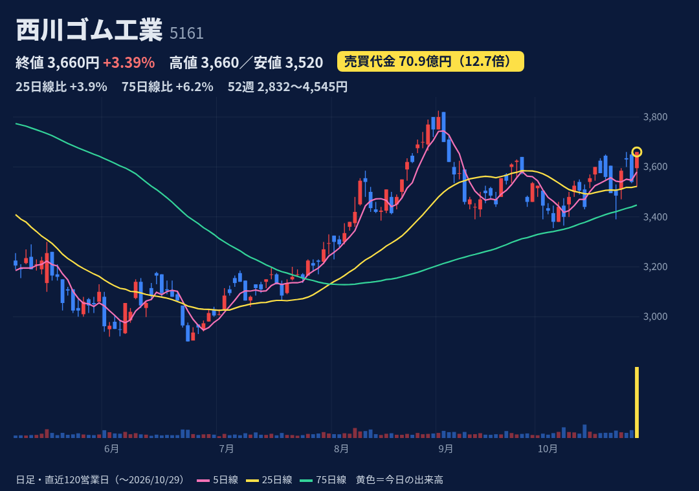
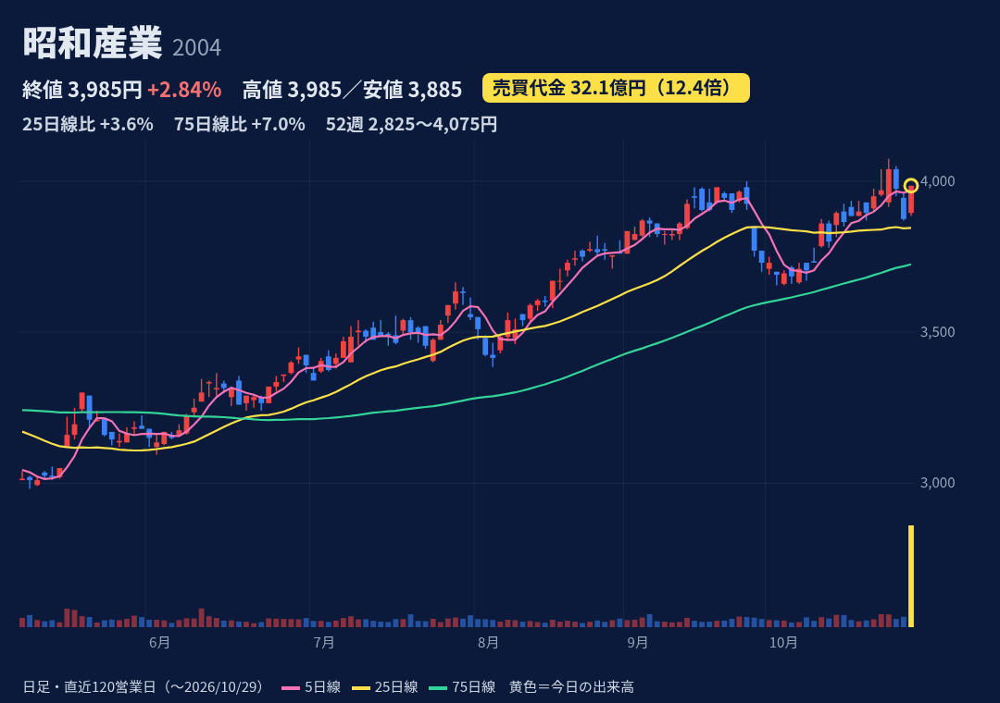
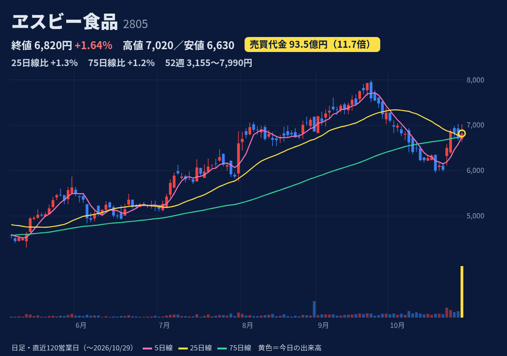
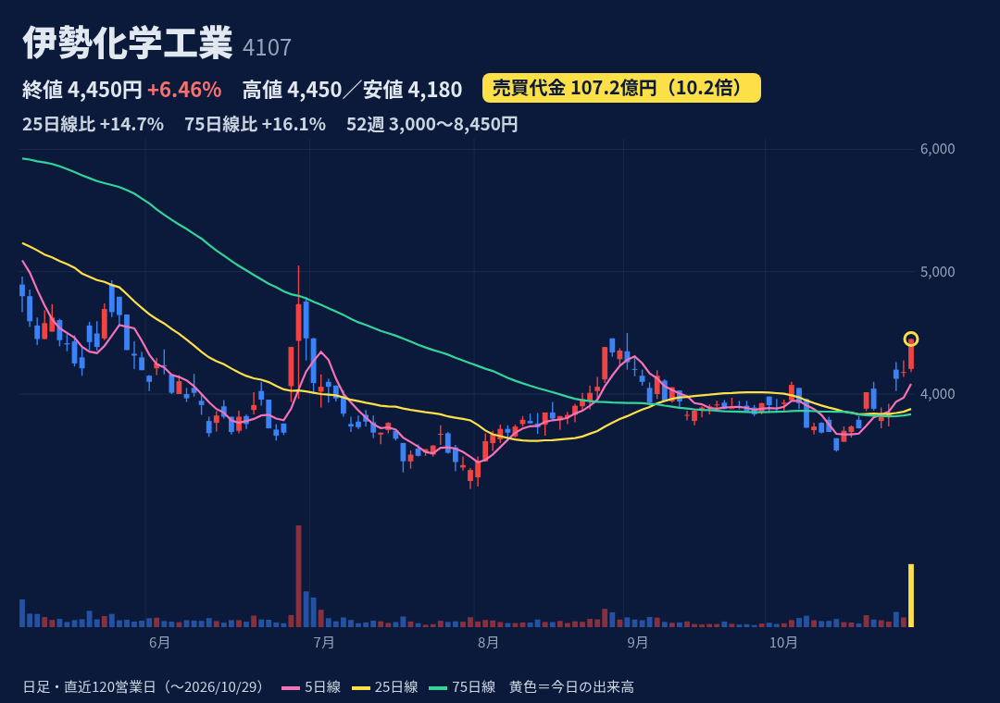
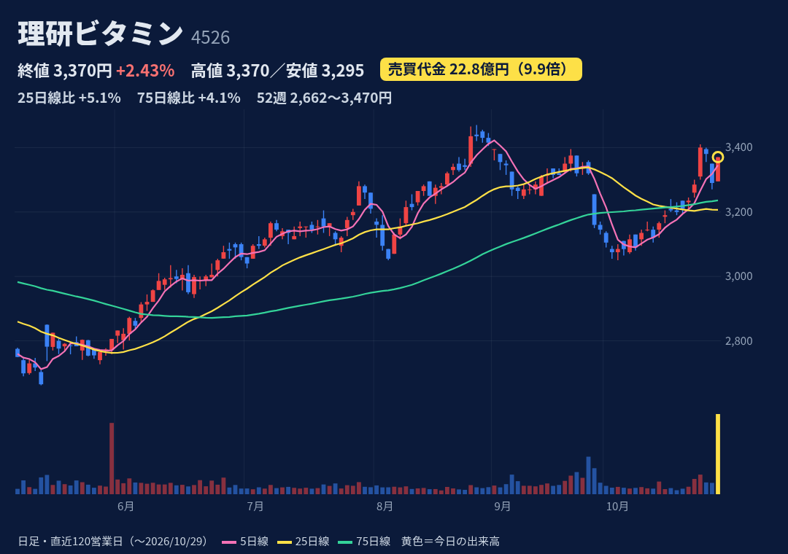

パチンコ周辺機器・情報通信機器・ゲームソフト等。近年は保有株売却益で最終益が営業益を大きく上回る構造
JPX総研が10/7公表のTOPIX初回定期入替で新規採用（10/30反映）。29日大引けがパッシブ資金の執行日。28〜29日の個別開示はTDnetで確認できず
1Q(4-6月)売上25.8億(前年比-0.3%)、営業益-0.06億。今期予想は売上192億・営業益21億と大幅増の計画で1Q進捗はほぼゼロ。次回決算11/13
始値9,980→高値10,180→終値10,090（陽線・小さな上ヒゲ）。52週高12,850(7/7)・安6,070(3/4)で位置59%。25日線+4%、75日線+7%
10/28時点 買残1.77万株・売残5.33万株、倍率0.33倍の売り長。日証金の注意喚起対象として日々公表データあり（J-Quants）
7/6に+15%（代金5.8倍）→10日後-14%、8/14に-20%（代金12倍）と値動きが荒い前例。PBR4.4倍。利益の多くが本業外

自動車用ゴムシール（ウェザーストリップ）大手。国内全自動車メーカーに納入、一般産業資材も
TOPIX初回定期入替で新規採用（10/7公表・10/30反映）。29日大引けの指数買い。28〜29日の個別開示は確認できず
1Q売上301億(+4%)、営業益22.0億(+25%)、通期予想 売上1,180億・営業益75億（前期90.5億から減益計画）に対し進捗29%。予想配当184円。次回決算11/13
始値3,595→高値=終値3,660（高値引け・陽線）。52週高4,545(2/27)・安2,832で位置48%。25日線+4%、75日線+6%。過去1年で代金3倍超は1回のみ
10/28時点 買残17.6万株・売残0（制度信用のみの信用銘柄）。買残は20日平均出来高の約1.1日分。日々公表等の規制は確認されず
普段は商いが薄く、指数買い後に需給が元に戻る可能性。会社予想は減益計画。予想PER約20倍（J-Quants）

製粉・食用油・糖化品・飼料などの穀物加工大手
28日引け後〜29日の個別開示・報道は確認できず。TOPIX既存構成銘柄（Small 2、移行措置対象外）。29日大引けの指数リバランス関連の売買と推測（未確認）
1Q売上924億(+9%)、営業益34.8億(-2%)。通期予想 売上3,500億・営業益120億（前期119億）に対し進捗29%。予想配当140円（前期115円）。次回決算11/9
始値3,895→高値=終値3,985（高値引け）。52週高4,075(10/26)の近くで位置93%。25日線+4%、75日線+7%。2025年12月にも代金5〜11倍の日が3回（理由未確認）
10/28時点 買残12.4万株・売残0.54万株、倍率約23倍の買い長（週次10/23は32.6倍）。規制は確認されず
業績は横ばい計画で個別の上昇材料は未確認。年初来高値圏で、過去の代金急増日は株価が伸びなかった前例

香辛料最大手（スパイスでシェア過半）。カレー等の即席食品やパスタソースも
TOPIX初回定期入替で新規採用（10/7公表・10/30反映）。29日大引けの指数買い。28〜29日の個別開示は確認できず。翌10/30に2Q決算予定
1Q売上349億(+9%)、営業益43.0億(+63%)。通期予想 営業益107億（前期103億）に対し進捗40%。次回決算10/30（前年同期は14:00発表）
始値6,700→高値7,020→終値6,820（陽線だが上ヒゲ200円）。52週高7,990(9/24)・安3,155で位置76%。25日・75日線とも約+1%
10/28時点 買残4.36万株・売残0（信用銘柄）。買残は20日平均出来高の約0.4日分と軽い。規制は確認されず
翌日に決算発表があり指数買い反動と決算反応が重なる。1年で株価2倍超と上昇済み。7/31決算日に+12%の前例

AGC系。ヨウ素の世界大手で、ペロブスカイト太陽電池の原料連想で人気化しやすい（12月期決算）
TOPIX初回定期入替で新規採用（10/30反映）＋ペロブスカイト材料：10/20パナHDの量産1年前倒し、10/27日経「政府がリコー等に約1,000億円拠出」報道で物色
2Q累計(1-6月)売上192億(-0%)、営業益41.4億(-14%)。通期予想 営業益80億（前期94.8億から減益計画）に対し進捗52%。次回決算11/4
始値4,205→高値=終値4,450（高値引け）。52週高8,450(2/9)・安3,000で位置27%。25日線+15%、75日線+16%。6/29に代金17倍+8%→10日後-22%の前例
10/28時点 買残107万株・売残100株（信用銘柄）。買残は20日平均出来高の約4日分と重め、ただし9月末の129万株からは減少。規制は確認されず
テーマ株で急騰→失速の前例多数（+8%超の日が過去1年で8回）。PER約38倍・PBR5.4倍。業績は減益計画。親子上場

わかめ・ドレッシング等の家庭用食品と、食品・化成品向け改良剤（乳化剤等）
28日引け後〜29日の個別開示・報道は確認できず（10/27に中間配当の開示のみ）。TOPIX既存構成銘柄（Small 2、移行措置対象外）。29日のリバランス関連と推測（未確認）
1Q売上251億(+8%)、営業益22.5億(-5%)。通期予想 売上1,000億・営業益71億（前期69億）に対し進捗32%。自社株買いは9/24に取得終了。次回決算11/12
始値3,295→高値=終値3,370（高値引け）。52週高3,470(8/27)・安2,662で位置88%。25日線+5%、75日線+4%
10/28時点 買残1.94万株・売残1.60万株、倍率約1.2倍。売残は10/23の0.65万株から増加。規制は確認されず
個別材料は未確認で指数需給の一過性の可能性。自社株買い終了で下支えが一つ減った。1Qは営業減益
株価・出来高・信用残：取引所データ。材料：各社開示・各社報道。